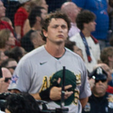

Twins 11, Athletics 8: Down 7-0 Before Springs Left Hurt, and the Hole Was Just Too Deep
Jeffrey Springs made it a run and a third before leaving with what looked like an injury, and by the time anyone in the bullpen got loose it was 7-0. Nick Kurtz hit the lights out late and this offense actually fought back. It still was not enough. Twins win 11-8. A's drop the rubber match and fall to 44-60.

This one was over before it started, and then, against all instinct, it almost wasn't. Jeffrey Springs walked out for the second inning already in trouble and did not finish it, exiting with an apparent injury after allowing five runs, four earned, on four hits in just a run and a third of work. By the time Springs was done, so was the game, at least on paper: Minnesota led 3-0 after the first on a Royce Lewis fielder's-choice RBI and a Kody Clemens triple that scored two more on an error, then tacked on three more in the second, a balk and a two-run Ryan Jeffers single doing the damage. A throwing error let a seventh run score in the fourth. 7-0, Twins, and Springs was already in the clubhouse.
Give this lineup credit for not folding, because for a stretch in the middle innings it looked like it might. Connor Prielipp was cruising for Minnesota, five and two-thirds innings, one run, two hits, five strikeouts, exactly the kind of return-from-injury start you do not want to see from the other dugout. Then the sixth happened. Nick Kurtz turned on a pitch and sent it 412 feet to center, three runs in, his 21st homer of the year, and suddenly it was an 8-3 game that felt a lot more alive than it had an inning earlier. Tyler Soderstrom doubled, his 22nd of the season, and Henry Bolte added a sacrifice fly in the seventh as the A's scratched across three more, pulling within 9-6 and making Target Field pay attention for the first time all afternoon.
That is as close as the comeback got. Minnesota answered in the eighth, a Ryan Kreidler triple and a Jeffers infield single pushing the lead back to 11-6, and while Jeff McNeil's two-run day capped with an eighth-inning single made it 11-8 in the ninth, there just was not enough game left to finish the job. Kurtz finished 1-for-3 with two runs and three RBIs, McNeil went 2-for-4 with two RBIs, and none of it changes the final. Twins 11, A's 8.
The bigger story tonight might not even be the score. Springs walking off mid-inning with something wrong is the kind of development that matters a lot more in September than it does in a fourth-place July, and we will be watching the injury report closely over the next few days. For now, the A's drop the rubber match, fall to 44-60, and head home having shown, for six innings anyway, that this offense can still put a scare into somebody. It just needed to start an inning or two earlier.
More coverage: A's section · Columns · Bay Area Sports Blog home